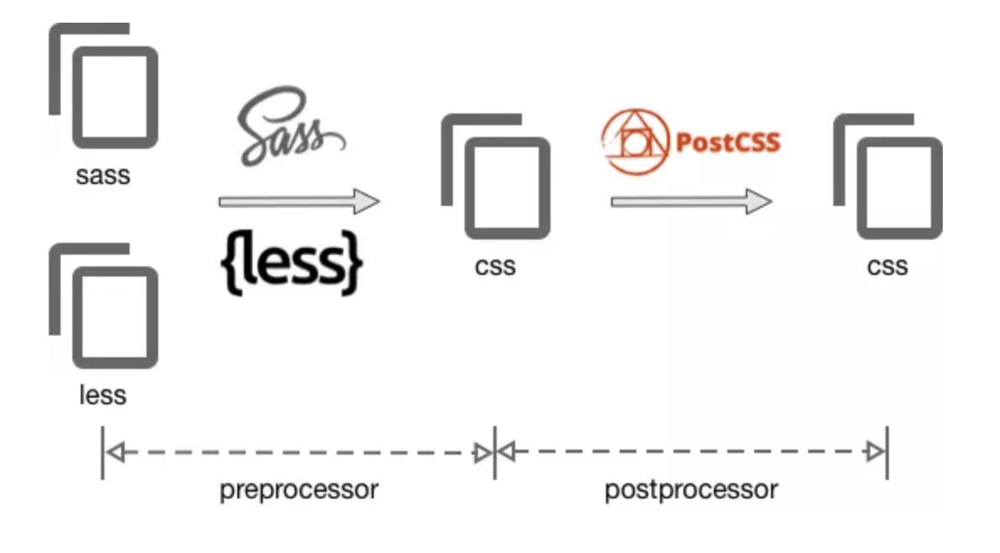

為何會需要postCss?
css 的預處理器一直都使用 sass，後來因為 webpack 的緣故才認識了 postCss ，但 sass 已經很好用，我會需要 postCss 嗎？
預處理器是讓開發者撰寫一些類似 css 語法的指令，再轉為瀏覽器能懂的 css；相較之下，後處理器就是讓開發者依然撰寫 css，再經過擴充功能（plugin）的後製處理，將特定功能轉成瀏覽器能懂的指令。
過去常用的 less、sass、scss 是屬於預處理器，而 postCss 是屬於後處理器。
使用 postCss 的好處是 -> postCss 有彈性、好擴充。相較 less、sass、scss 這些預先綁了許多可能用不到的功能的預處理器，postCss 只根據需要加入或刪除功能，像是 precss、prefix、mixin 等。並且，未來若主流瀏覽器支援了這些功能，要拔除特定 plugin 是很容易的。
$ npm install postcss-loader --save-dev
webpack.config.js
rules: [
{
test: /\.css$/,
exclude: /node_modules/,
use: [
{
loader: 'style-loader',
},
{
loader: 'css-loader',
options: {
importLoaders: 1,
}
},
{
loader: 'postcss-loader'
}
]
}
]
postcss.config.js
* 所有使用到的插件都需在這裡配置，空配置頂時配置 xx : {}
ps：也可以在 webpack 中配置
module.exports = {
plugins: {
precss: { }, // 使用類似 SASS 的功能，例如：變數 ( 需安裝 npm install precss )
autoprefixer: { // 加入各家瀏覽器的前綴詞
browsers:
//可以都不填，用默認配置
// 指定支援的瀏覽器版本
'Chrome >= 52',
'FireFox >= 44',
'Safari >= 7',
'Explorer >= 11',
'last 2 Edge versions',
}
}
}
autoprefixer
根據 Can I Use，自動補齊前綴字
安裝：npm install autoprefixer --save-dev
postcss-cssnext
别忘了在 postcss.config.js 配置：‘postcss-cssnext’: {}
cssnext 包含了 autoprefixer ，都安裝會報錯，如下：
Warning: postcss-cssnext found a duplicate plugin (‘autoprefixer’) in your postcss plugins. This might be inefficient. You should remove ‘autoprefixer’ from your postcss plugin list since it’s already included by postcss-cssnext.
相當於一個變量，變量的好處顯而易見，可重複使用
1 . 定義
在 :root 選擇器定義一個 css 屬性
:root{
--mianColor:#ffc001;
}
2 . 使用
使用 var(xx) 調用自定義屬性
.test{
background: var(--mianColor);
}
/*編譯後*/
.test{
background: #ffc001;
}
使用下個版本的 css 語法，語法見 cssnext (css4) 語法
安装：npm install postcss-cssnext --save-dev
postcss-pxtorem
把 px 轉換 rem
安裝：npm install postcss-pxtorem --save-dev
{
rootValue: 16, //你在html節點設的font-size大小
unitPrecision: 5, //轉rem精確到小數點多少位
propList: ['font', 'font-size', 'line-height', 'letter-spacing'],//指定轉換成 rem 的屬性
selectorBlackList: [],// str/reg 指定不轉換的選擇器，str 時包含字段即符合
replace: true,
mediaQuery: false, //mediaQuery查詢内的 px 是否轉換
minPixelValue: 0 //小於指定數值的 px 不轉換
}
https://segmentfault.com/a/1190000010926812
https://cythilya.github.io/2018/08/10/postcss/#%E8%A8%BB%E4%BA%8C
https://github.com/postcss/postcss#articles